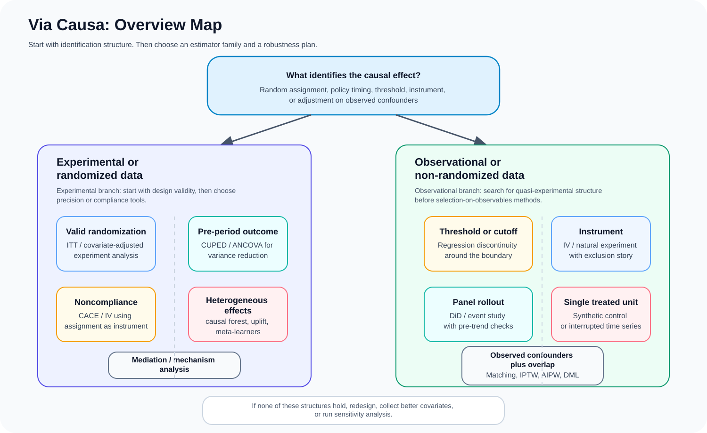

The cause of a cause is the cause of the effect. Causal effects often propagate through pathways, not only direct links. Correlation alone is not enough to establish causation.
Choose causal inference methods from study design, identification strategy, and business objective.
The selector uses a decision-tree backbone, but it returns multiple viable methods with assumptions,
validation checks, references, and exportable robustness checklists.

Overview map for the selector. The interactive tool below expands each branch into method recommendations, package suggestions, and exportable robustness checklists.
Study Setup
Answer the questions that matter for identification. The tool adapts later questions to your design.
Start with whether treatment assignment was randomized or not.
Pick the main causal question, not every downstream analysis you may run later.
Design Signals
Examples: pre-period spend, trips, clicks, or repeated baseline outcome measurements.
Example: assigned users do not always adopt the feature, or encouragement differs from uptake.
Needed for methods such as difference-in-differences, interrupted time series, and synthetic control.
Examples: one city launch, one state regulation, one platform-wide intervention.
Examples: age cutoff, credit score threshold, policy eligibility boundary.
The instrument must shift treatment strongly and affect the outcome only through treatment.
If treated and untreated units barely overlap in covariate space, many adjustment methods become unstable.
Think high-cardinality features, rich user history, text, or many confounders.
Recommended Methods
The tool shows a primary recommendation, strong fallbacks, and identification warnings.
Why this is not a rigid one-path decision tree
Many applied problems support more than one defensible method.
Identification assumptions matter more than the algorithm name.
Practitioners often need a primary method plus a robustness check, not a single branch answer.
The best workflow is usually design first, estimator second, diagnostics third.
This selector therefore uses a decision-tree backbone but returns method cards with fit, assumptions, and what to validate next.
Methods Covered
Randomized experiment analysis with covariate adjustment
Switchback experiments for interference-heavy marketplaces or networks
CUPED / pre-period variance reduction
Effect among compliers (CACE / LATE) via IV for noncompliance
Heterogeneous treatment effect models such as causal forests, uplift models, and meta-learners
Mediation analysis
Matching and propensity-score weighting
Doubly robust estimators such as AIPW and double machine learning
Difference-in-differences and event-study style designs
Interrupted time series and synthetic control
Regression discontinuity design
Instrumental variables for observational settings
Notes
This standalone version preserves the current recommendation logic, references, switchback support, responsive overview diagrams, shareable query-string state, and exportable robustness checklists.
Use it as a structured starting point for design review and analysis planning, not as a substitute for subject-matter expertise, DAG work, or assumption checks.